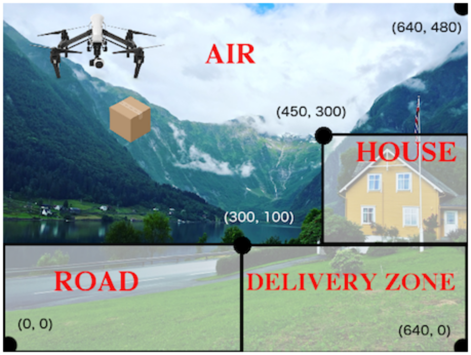

Functions That Ask Questions
Students are introduced to if-then-else expressions, writing conditionals that deal with simple types (Numbers, Strings, Booleans, etc) and data structures of their own to implement a more complex animation.
|
Product Outcomes |
Students learn conditional expressions by writing a simple function |
|
Materials |
helper function-
a small function that handles a specific part of another computation, and gets called from other functions
piecewise function-
a function that computes different expressions based on its input
| What to Wear | 20 minutes |
Overview
Students are introduced to Pyret’s if-then-else construct.
Launch
Sometimes we want our functions to behave one way for a certain input or condition, but a totally different way for a different input or condition. Piecewise functions in mathematics also have this property (think about absolute value!). So how do we write conditionals in Pyret?
Investigate
Open the What to Wear Starter File. After reading through the definition for the wear function:
-
Click "Run", so that you can use
wearin the Interactions Area. -
What does
wear(50)evaluate to? -
What does
wear(100)evaluate to? -
What is the domain and range of the
wearfunction? -
What is the name of the variable in the
wearfunction? -
Change the
wearfunction to return the shorts outfit when it’s cold (less than 30 degrees).
Synthesize
An if expression has four parts:
-
An
ifclause -
Any number of
else ifclauses -
An optional
elseclause -
An
endkeyword
The if clause has a question, followed by a : (a colon), followed by an answer for if the question evaluates to true. Each else if clause also has a question, followed by a colon, followed by an answer for if the question evaluates to true. The else: clause runs if none of the questions in the other clauses evaluated to true. It catches all the cases that aren’t covered by a specific question in one of the if or else if clauses.
The else: clause at the end of an if expression is optional. Typically, it is important to make sure your code will account for all possible conditions, and ending with else: is a useful catchall condition if all of the other conditions return false. However, this is optional in the case that every single possible condition is covered by else if statements.
At this point, we need to introduce an extension to the Design Recipe, to allow it to handle conditionals. If we look at the examples for wear, and circle everything that changes, both the input (the temperature) and the output (the image) change. However, wear only has a single variable according to the domain in its contract. Also, the image is completely dependent on the temperature — it isn’t a separate independent variable, so it wouldn’t make sense for it to be another element in the domain of wear. The fact that we have more changing things than elements in the domain tells us that wear must be a piecewise function. This is the same rule as in Bootstrap:Algebra, and just as we could in Racket, we can tell that a function must be piecewise just by looking at its contract and the examples. This helps us identify when a function we are writing in our games needs to use if, as long as we follow the Design Recipe when building it. Another way to recognize a piecewise function when looking at your examples is to note whether or not there are elements which completely depend on another. In wear, the image depends on the temperature, and does not change independently, or in response to any other changes in the function. Keep an eye out for these dependent variables in your examples as you write them to help identify piecewise functions.
This is an important point to review. Conditionals, or Piecewise functions, are a big moment in Bootstrap:Algebra, and the extension of the Design Recipe is key for students to design their own piecewise functions later on. In the next exercise, make sure they use the Recipe steps to remind them of the mechanics of this type of function.
| Where’s my Order? | 35 minutes |
Overview
Students connect conditional functions with behaviors in games, and write one from scratch.
Launch
Let’s revisit the Package Delivery Starter File drone from earlier. We’re going to write a function that tells us where the package is for a given DeliveryState. This is the kind of function you might need to write later on in your game. For example, you may need to know whether a character has reached a portal at a certain part of the screen to advance to the next level, or if they’ve fallen into dangerous lava!
Investigate
DeliveryState.
{kind=link}
Once you’ve completed the problem on paper, open the Where’s my Order? file. We’ve gotten you started with the contract and purpose statement for location in the file.
# location :: DeliveryState -> String
# Consumes a DeliveryState and produces a String
# representing the location of the box:
# either "road", "delivery zone", "house", or "air"Copy the work you have in your workbook to implement location on the computer.
In addition to writing your examples, you can also check that the location function’s behavior matches what a drawing of a DeliveryState instance shows. For example, if location returns "road" on some input, when we draw that same input, it ought to look like the package has landed in the road!
Experiment with this function!
-
Click "Run" to compile your program, then close the animation window.
-
In the Interactions Area, evaluate
location(START). What does it return (hopefully"air")? -
Evaluate
draw-state(START). Does it look like the box is in the air? -
Do the same for an instance of a DeliveryState where the box is in the road, on the house, and in the delivery zone.
Synthesize
These experiments show an important connection between functions that work with instances of a data structure, and the way we draw those instances. In our design for the animation, we have an understanding of what different regions of the screen mean. Here, we see that the draw-state and location functions both share this understanding to give consistent information about the animation.
| Piecewise Bug Hunting | 15 minutes |
Overview
Students flex their conditional-function muscles, by looking at buggy conditions and figuring out what went wrong.
Launch
Investigate
Open your workbook to Syntax and Style Bug Hunting: Piecewise Edition. In the left column, we’ve given you broken or buggy Pyret code. On the right, we’ve given you space to either write out the correct code, or write an explanation of the problems with the provided code. Work through this workbook page, then check with your partner to confirm you’ve found all the bugs!
| Colorful Sun | 30 minutes |
Overview
Students return to an animation they’ve created before, and enhance it by using conditionals.
Launch
Let’s return to your sunset animation from the previous unit. Currently, the sun’s x and y-coordinate change to make it move across the screen and disappear behind the horizon. In this unit, we’ll make the animation a bit more realistic, by changing the color of the sun as it gets lower in the sky. At the top of the screen, the sun should be yellow, then change to orange as it gets to the middle of the screen, and then become red as it reaches the bottom, close to the horizon.
In programming, it is fairly common that you will change a program that you’ve already written to do something new or different. Modifying existing code is a valuable skill, and one that we want to practice with this exercise. It is so useful, in fact, that we’ve created a worksheet to help you map out what needs to change in an existing animation to support new behavior.
Investigate
Turn to Animation Data Worksheet and ../../lessons/re-functions-that-ask-questions/pages/animation-worksheet-samples.html. Fill in the description of the animation change and three sample images at the top of the first page. If you don’t have colored pencils, just make an annotation near each sketch as to what color the sun should be in that sketch.
Once you know what new behavior you want, the next task is to build it into your code. The next two tables in the worksheet ask you to think about the NEW features that are changing in your game and how you might capture them.
Talk with your partner about what new information is changing and how you might build that into your program. Does the color change in a predictable way? Is the color a new field that is independent of the fields you already have? Based on your answer, do you think you will need to add something new to your SunsetState data structure, or can you change the look of your animation based on what is already there?
There are a number of ways students can solve this problem. Once students have brainstormed with their partners, have a classroom discussion to have pairs share their ideas.
Since the color of the sun will be changing, we could add a field to the SunsetState data structure, such as a String with the current color name. However, the color will not change independently: we want the color to change based on the position of the sun in the sky, and get darker as it gets lower. Let’s figure out how to make the sun color change based only on the fields we already have.
Fill in the table at the bottom of the worksheet assuming we are not changing the data structure: which components (including existing functions) need to change?
If we have decided not to add fields, you should have marked that the draw-state method changes, but nothing else needs to. We only change next-state-tick and next-state-key if there has been a change to the data structure.
You may need to guide students to realizing that a change in the appearance of the animation can be done entirely through draw-state. This is another point for emphasizing the separation between maintaining instances and drawing instances.
How do we change draw-state? Our first instinct may be to turn it into a piecewise function, and draw something different when the SunsetState’s y-coordinate gets below 225 or below 150. This would yield code along the lines of:
fun draw-state(a-sunset):
if a-sunset.y < 150:
put-image(
rectangle(WIDTH, HORIZON-HEIGHT, "solid", "brown"),
200, 50,
put-image(circle(25, "solid", "yellow"),
a-sunset.x, a-sunset.y,
rectangle(WIDTH, HEIGHT, "solid", "light-blue")))
else if a.sunset.y < 225:
# same code with "orange" as sun color
else:
# same code with "red" as sun color
end
endNotice that this version contains three very similar calls to put-image. The only thing that is different about these three calls is the color we use to draw the sun. Whenever you find yourself writing nearly-identical expressions multiple times, you should create another function that computes the piece that is different. You can then write the overall expression just once, calling the new function to handle the different part. Functions that handle one part of an overall computation are called helper functions.
Assume for the moment that we had written a helper function called draw-sun that takes a SunsetState and returns the image to use for the sun. If we had such a function, then our draw-state function would look as follows:
fun draw-state(a-sunset):
put-image(
rectangle(WIDTH, HORIZON-HEIGHT, "solid", "brown"),
200, 50,
put-image(draw-sun(a-sunset),
a-sunset.x, a-sunset.y,
rectangle(WIDTH, HEIGHT, "solid", "light-blue")))
endOpen your workbook to Word Problem: draw-sun. Here we have directions for writing a function called draw-sun, which consumes a SunsetState and produces an image of the sun, whose color is either “yellow”, “orange”, or “red” depending on its y-coordinate.
The word problem assumes a background scene size of 400x300 pixels. Once students use their draw-sun function in their animation, they may need to change the specific conditions if they have a much larger or smaller scene.
Once you’ve completed and typed the draw-sun function into your sunset animation program, modify draw-state to use it as we showed just above.
Now let’s think about having the sunset animation "`start again`"after the sun sets, with the sun reappearing in the upper-left corner.
Assume you edited your animation to restart the sun at the upper left after it sets. What color should the sun be when it appears at the upper-left the second time around? What color will it be based on your code? Will it be yellow again, or will the color have changed somehow to red?
To figure this out, think about what controls the color of the sun in your current code.
Edit the sunset animation so that the animation restarts.
-
Which of your functions has to be modified to include this change?
-
Is restarting fundamentally about drawing one frame or about generating new instances?
-
Use that question to help yourself figure out which function to modify. You could use the space for examples of functions at the end of your worksheet on extending the animation to write a new example before you modify your code.
Synthesize
This question about the color of the sun is an especially good question-and it likely to come up-from students who may have experience programming with variables and updates in other languages, such as Scratch (where the color would have changed to red). In our approach, where we simply determine the sun color from the y-coordinate, the sun should naturally restart as yellow. Of course, if students had maintained the sun color as a separate field in their data structure, they would have to consider this issue, and manually reset the sun color as well as the y-coordinate when restarting the animation.
Optional: In addition to changing the color of the sun, have the background color change as well: it should be light blue when the sun is high in the sky, and get darker as the sun sets.
Like changing the color of the sun, there are multiple valid ways of completing this optional activity. If you have students solving the same problem with different code, have them share their code with the class and have a discussion about the merits of each version.
These materials were developed partly through support of the National Science Foundation,
(awards 1042210, 1535276, 1648684, and 1738598).  Bootstrap by the Bootstrap Community is licensed under a Creative Commons 4.0 Unported License. This license does not grant permission to run training or professional development. Offering training or professional development with materials substantially derived from Bootstrap must be approved in writing by a Bootstrap Director. Permissions beyond the scope of this license, such as to run training, may be available by contacting contact@BootstrapWorld.org.
Bootstrap by the Bootstrap Community is licensed under a Creative Commons 4.0 Unported License. This license does not grant permission to run training or professional development. Offering training or professional development with materials substantially derived from Bootstrap must be approved in writing by a Bootstrap Director. Permissions beyond the scope of this license, such as to run training, may be available by contacting contact@BootstrapWorld.org.